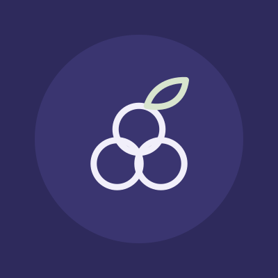

About the concept
An original practice. A working website.
This project explores how a calm voice, useful content and clear handoffs can support a women’s health journey without assuming a life plan.
The brief
People comparing gynecology, pregnancy and menopause care, including those preparing for an unfamiliar or sensitive visit. Age-based assumptions and pregnancy-heavy messaging can make other visitors feel out of place.
The reference
Round three rebuilds Juniper on the structure of Hers, the clearest women’s-health site in the research: care-area navigation with a menu per area, rounded inset panels, two-tone headlines and four equal care tiles at the top. It is adapted to an in-person practice (Book a visit, locations, hours) and to Juniper’s own colours, logo and words. Nothing of Hers’ name, wordmark, colours, graphics or copy is used. Women’s Healthcare Associates informed the earlier research: make service, provider and life-stage navigation work together while preserving patient choice. Neither organization commissioned or endorsed this project.
The Juniper system.
Logo
A monoline juniper-berry cluster: three overlapping circles, one for each area of care, and one leaf. The wordmark is Figtree, outlined, with “Women’s Health” small and tracked.
-

Palette
- Ground
#EEEAF6Lavender: the page itself - Ink
#2E2A5CIndigo: text, buttons, the logo - Accent
#4F4A8CViolet: the first line of every headline - Support
#D8E4CESage: panels, chips, leaves - Highlight
#E8A93AMarigold: small warm moments only - Urgent
#B3261ERed: urgent lines and 911 only
| Text | On | Ratio |
|---|---|---|
#2E2A5C | #EEEAF6 | 11.1 : 1 |
#4F4A8C | #EEEAF6 | 6.6 : 1 |
#2E2A5C | #D8E4CE | 9.9 : 1 |
#FFFFFF | #2E2A5C | 13.1 : 1 |
#2E2A5C | #E8A93A | 6.3 : 1 |
#B3261E | #FFFFFF | 6.5 : 1 |
Type
| Role | Setting | Use |
|---|---|---|
| Hero | Figtree 450, 44–76px, line-height 1.02, tracking −2% | Two tones: accent line, then ink line |
| Heading 2 | Figtree 450, 32–52px, line-height 1.05 | One idea per section |
| Heading 3 | Figtree 600, 20–24px | Card and step titles |
| Body | Figtree 400, 17.5px, line-height 1.6 | Sentences under 25 words |
| Label | Figtree 650, 11.5px, tracking 14%, uppercase | Pill labels and menu headings |
| Voice | Alegreya italic, 19–22px | Only inside the conversation card and patient quotes |
Icons
One set on a 24-unit grid: 1.75 stroke, round caps and joins, 2-unit corners, no fills.
- talk
- explain
- follow
- card
- phone
- pin
- clock
- parking
- transit
- stepfree
- cycle
- moon
- test
- pelvic
- warmth
- shield
- sprout
- quiet
- people
- scan
- bill
Photography
Fourteen slots in one grade: warm natural daylight, soft contrast, a faint lavender cast in the shade, true skin tones. Models only, never presented as patients or staff. Each photo is cropped to its slot and credited below.
Persona: Dana Okafor, 39
Marketing manager, two children (the second born two years ago). She drives the order of the homepage, the support cards and the photography.
Right now
- Irregular periods and broken sleep; wonders if it is perimenopause
- An overdue Pap test
- Pelvic-floor questions since the birth
Wants
- One practice for now and later
- A clinician who listens for longer than ten minutes
- A plan, and follow-up she can fit around work
Worries
- Being told it’s “just stress”
- A cold, hurried examination
- Surprise bills
- Feeling too young for menopause care
Voice
Say the real thing, plainly.
DoIrregular periods and broken sleep are worth a visit.
Don’tNavigate your hormonal journey with confidence.
Never assume a life plan.
DoPregnancy plans, either way.
Don’tEverything for the mom-to-be.
Offer a next step, not a promise.
DoAsk how the visit will be billed before the day.
Don’tNo surprise bills, guaranteed.
What is built
Care pages, guides, a conversation card, a Clinic owner view, four local social previews and an illustrative handoff model. Brand identity, copy, icons and botanical illustrations were created for this portfolio.
What is not claimed
No operating clinic, real providers, patient research interviews, clinical review, system integration, live campaign or measured business result. Addresses and hours are samples. Any real launch would require verified operational content and professional review, including clinical sign-off on the urgent and consent wording.
Type licences
Figtree and Alegreya, both under the SIL Open Font License 1.1 (Figtree licence, Alegreya licence).
Image credits
14 photographs: 5 free-licence stock photos (Unsplash and Pexels) for places and details, and 9 images generated with Canva for people, so the persona looks like the same person throughout. Everyone shown is an illustrative model. Nobody is a real patient, and no photo shows a real member of staff.
hero-gynecologyAI-generated with Canva. An illustrative model, not a real person, patient or clinician.hero-pregnancyAI-generated with Canva. An illustrative model, not a real person, patient or clinician.hero-menopauseAI-generated with Canva. An illustrative model, not a real person, patient or clinician.hero-first-visitPhoto by Sixteen Miles Out on Unsplash (Unsplash License).consultationAI-generated with Canva. An illustrative model, not a real person, patient or clinician.journalingAI-generated with Canva. An illustrative model, not a real person, patient or clinician.handsPhoto by Thirdman on Pexels (Pexels License).ultrasoundPhoto by MART PRODUCTION on Pexels (Pexels License).new-parentAI-generated with Canva. An illustrative model, not a real person, patient or clinician.clinician-portraitAI-generated with Canva. An illustrative model, not a real person, patient or clinician.coordinator-portraitAI-generated with Canva. An illustrative model, not a real person, patient or clinician.entrancePhoto by Stephen Mabbs on Unsplash (Unsplash License).eastbankPhoto by Eddson Lens on Pexels (Pexels License).three-womenAI-generated with Canva. An illustrative model, not a real person, patient or clinician.